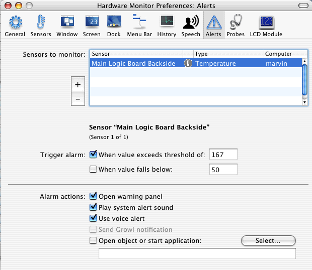

Defining alerts |
The application can optionally monitor readings of sensors and inform you if values exceed or fall below certain threshold limits. The settings for this feature can be found in the pane Alerts of the preference window.

The table in the upper half of the window defines what sensors should be monitored in general. You can add sensors to the table as discussed earlier.
After selecting a sensor in the table, you can define in the lower portion of the window when an alarm should be triggered. An upper or a lower limit for the monitored reading can be set, or both. Temperature readings are specified by the currently active unit.
The initial trigger values displayed after adding a new sensor to monitor are just reasonable default values without a concrete meaning. The don't reflect a recommendation by the program and have nothing to do with the technical specifications for this sensor location. You are responsible for setting good limits yourself. If the limits are not a trade secret of Apple, they may be given in the third and fourth columns of the Sensor Overview window.
If a monitored reading exceeds or falls below the entered limits, an alarm will be triggered. It can result in one or several of the following actions:
In any case - even if you have defined no alarm actions at all - the application will display readings for sensors in alert state with inverted colors (for example white on black instead of black on white). These alarm markers are visible in the sensor window, in the screen display and in the menu-bar. The actions marked by (*) also become effective for the menu-bar "Lite" version of the application.
The system alert sound can be configured with the setting Sound > Sound Effects in System Preferences. A spoken alert will be announced only if speech output is enabled.
Growl is a third-party technology that allows to display "non-intrusive" notification messages on the user interface of Mac OS X. It also supports advanced features like notification-forwarding in a network, or sending alerts by e-mail. To learn more about Growl, please see their Internet web pages.
Note that it's neither possible, nor necessary to define "critical" alerts, i.e. triggering an alarm when limits are crossed which could cause damage to your computer. All Macintosh computers equipped with sensors already monitor the readings. The computer will be automatically shut down or put into sleep mode by Mac OS X if a reading enters a range affecting system health.
However, if you want to define your own policy of shutting down the system to sleep mode in case of an alert situation, this is possible as follows:
tell application "Finder" to sleepThis can be particularly useful if you have added customized hardware, e.g. an additional hard drive which changes the thermal profile of the system and might contain its own sensor.
If you enable the alert option Open object or start application, the Launch Services of Mac OS X will automatically activate the document or program you have specified when an alert is triggered. If you want to develop a customized script or application for this case, your program might need to know which of the configured sensors has raised the alert. The monitor application provides this information via a text file which is overwritten for each new alert (which means for each new call of your external program).
The status file is created at the fixed position
/tmp/HardwareMonitor-CurrentAlert.txt
in Mac OS X's folder for temporary files. It contains an internal identifier referring to the sensor which has raised the current alert. If that sensor is a remote sensor, the identifier will have the prefix
remote.serialnumber.
where serialnumber is replaced by the actual serial number
of the remote computer.
To get a complete cross-reference list for all sensor identifiers which can be generated in your current configuration, select the menu item File > Save Sensor IDs for Alert Scripting. The monitor application will create a report text file, listing each connected sensor in the form
identifier: customized clear-text name of this sensor according to
your preferences (computer).